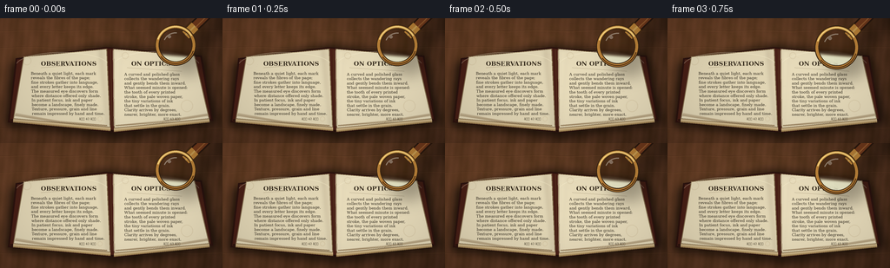
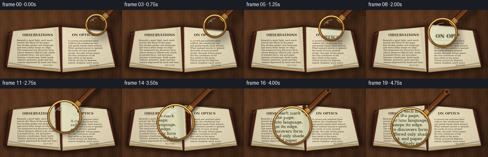

CODING AGENTS AS PIXEL WORLD MODELS
traex/GPT-5.6-Sol · phygen_066
点击播放 · 原生 RGB 像素
逐轮保存的候选
回放视频、检查图与代码变化。
每份候选均可单独播放。实际图片检查记录在下方工具轨迹中。
候选 01播放与检查图
点击播放 · 原生 RGB 像素


展开代码变化
--- 上一保存版本
+++ 本次保存版本
@@ -0,0 +1,233 @@
+from pathlib import Path
+import math
+import numpy as np
+from PIL import Image, ImageDraw, ImageFont, ImageFilter, ImageEnhance
+import artifact_io
+
+W, H, N = 256, 144, 20
+S = 4
+WS, HS = W*S, H*S
+rng = np.random.default_rng(6601)
+
+
+def font(path, size):
+ try:
+ return ImageFont.truetype(path, max(1, int(size*S)))
+ except Exception:
+ return ImageFont.load_default()
+
+SERIF = "/usr/share/fonts/truetype/dejavu/DejaVuSerif.ttf"
+SERIF_B = "/usr/share/fonts/truetype/dejavu/DejaVuSerif-Bold.ttf"
+ITALIC = "/usr/share/fonts/truetype/dejavu/DejaVuSerif-Italic.ttf"
+body_font = font(SERIF, 4.6)
+small_font = font(SERIF, 3.7)
+head_font = font(SERIF_B, 7.1)
+italic_font = font(ITALIC, 4.3)
+
+
+def P(points):
+ return [(int(x*S), int(y*S)) for x,y in points]
+
+
+def make_background():
+ # Warm walnut table with directional light and fine grain.
+ yy, xx = np.mgrid[0:HS, 0:WS]
+ light = 1.0 - 0.26*(xx/WS) + 0.10*(1-yy/HS)
+ grain = (5.5*np.sin(xx/17.0 + 0.65*np.sin(yy/23.0)) +
+ 2.2*np.sin(xx/4.7 + yy/47.0) + rng.normal(0, 1.8, (HS,WS)))
+ base = np.empty((HS,WS,3), dtype=np.float32)
+ colors = np.array([86, 52, 31], dtype=np.float32)
+ for c in range(3): base[:,:,c] = colors[c]*light + grain*(1.0 if c==0 else 0.62)
+ # Soft golden pool of light around the book.
+ glow = np.exp(-(((xx-420)/460)**2 + ((yy-215)/310)**2))*13
+ base[:,:,0] += glow; base[:,:,1] += glow*0.72; base[:,:,2] += glow*0.35
+ arr = np.uint8(np.clip(base,0,255))
+ im = Image.fromarray(arr, 'RGB')
+ d = ImageDraw.Draw(im, 'RGBA')
+ # Long, irregular wood seams.
+ for y in [14, 33, 126]:
+ pts=[]
+ for x in range(-5, W+6, 8):
+ pts.append((x*S, int((y + 0.6*math.sin(x*.09+y))*S)))
+ d.line(pts, fill=(47,27,17,55), width=max(1,S//2))
+ d.line([(x,y+S) for x,y in pts], fill=(157,103,60,23), width=1*S)
+ for _ in range(28):
+ y=float(rng.uniform(0,H)); x=float(rng.uniform(0,W)); length=float(rng.uniform(15,65))
+ d.arc((int(x*S),int((y-1.2)*S),int((x+length)*S),int((y+1.2)*S)),180,355,
+ fill=(38,22,14,int(rng.integers(10,28))),width=1)
+ return im
+
+
+def draw_book(scene):
+ # Book's broad cast shadow.
+ shadow = Image.new('RGBA',(WS,HS),(0,0,0,0)); sd=ImageDraw.Draw(shadow,'RGBA')
+ sd.polygon(P([(12,52),(120,31),(233,44),(250,120),(136,138),(6,124)]), fill=(12,7,3,180))
+ shadow=shadow.filter(ImageFilter.GaussianBlur(5*S)); scene.paste(shadow,(0,0),shadow)
+ d=ImageDraw.Draw(scene,'RGBA')
+ # Dark oxblood cover showing beneath the page block.
+ d.polygon(P([(18,46),(122,33),(232,43),(245,118),(135,132),(9,120)]),
+ fill=(72,31,22,255), outline=(43,19,14,255), width=2*S)
+ d.line(P([(12,117),(134,130),(242,116)]), fill=(29,13,9,190), width=2*S)
+ # Golden-edged page stacks, offset layers create thickness.
+ left=[(27,44),(123,35),(127,126),(15,116)]
+ right=[(130,35),(224,43),(241,116),(131,127)]
+ for off, col in [(4,(151,123,79,255)),(3,(182,153,105,255)),(2,(205,181,136,255))]:
+ d.polygon(P([(x,y+off) for x,y in left]), fill=col)
+ d.polygon(P([(x,y+off) for x,y in right]), fill=col)
+ # Main cream pages.
+ d.polygon(P(left), fill=(226,214,181,255), outline=(130,108,76,255), width=S)
+ d.polygon(P(right), fill=(232,220,187,255), outline=(130,108,76,255), width=S)
+ # Subtle page lighting gradients and central gutter.
+ overlay=Image.new('RGBA',(WS,HS),(0,0,0,0)); od=ImageDraw.Draw(overlay,'RGBA')
+ for i in range(16):
+ a=int(4+i*2.0)
+ od.line(P([(122-i*.55,37),(126-i*.20,124)]),fill=(74,49,27,a),width=S)
+ od.line(P([(132+i*.52,37),(131+i*.18,124)]),fill=(255,250,218,max(2,22-i)),width=S)
+ overlay=overlay.filter(ImageFilter.GaussianBlur(2*S)); scene.paste(overlay,(0,0),overlay)
+ d=ImageDraw.Draw(scene,'RGBA')
+ d.line(P([(127,36),(129,124)]), fill=(87,59,34,130), width=S)
+ d.line(P([(130,37),(131,124)]), fill=(255,246,211,110), width=S)
+ # Curled outer edges and stacks.
+ for j in range(5):
+ a=105-j*14
+ d.line(P([(17+j*.25,112-j*.65),(68,120-j*.4),(123,124-j*.2)]),fill=(120,91,55,a),width=1*S)
+ d.line(P([(133,124-j*.25),(187,120-j*.45),(239-j*.2,112-j*.55)]),fill=(120,91,55,a),width=1*S)
+ d.arc((18*S,39*S,125*S,70*S),190,347,fill=(255,247,211,70),width=S)
+ d.arc((130*S,38*S,230*S,72*S),194,349,fill=(255,249,218,62),width=S)
+
+ # Printed page content. Warm-black ink, actual text plus typographic rules.
+ ink=(48,42,31,220)
+ faint=(65,56,40,180)
+ d.text((47*S,48*S),"OBSERVATIONS",font=head_font,fill=(55,45,31,235),anchor='la')
+ d.line(P([(47,57),(111,52)]),fill=(93,73,48,130),width=1)
+ left_lines=[
+ "Beneath a quiet light, each mark", "reveals the fibres of the page;", "fine strokes gather into language,", "and every letter keeps its edge.",
+ "The measured eye discovers form", "where distance offered only shade.", "In patient focus, ink and paper", "become a landscape, finely made.",
+ "Texture, pressure, grain and line", "remain impressed by hand and time."
+ ]
+ for i,txt in enumerate(left_lines):
+ x=(35.5 + i*.15)*S; y=(61.0+i*5.15)*S
+ d.text((int(x),int(y)),txt,font=body_font,fill=ink)
+ d.text((91*S,114*S),"â 42 â",font=small_font,fill=faint)
+
+ d.text((151*S,48*S),"ON OPTICS",font=head_font,fill=(55,45,31,235))
+ d.line(P([(146,57),(209,61)]),fill=(93,73,48,130),width=1)
+ right_lines=[
+ "A curved and polished glass", "collects the wandering rays", "and gently bends them inward.", "What seemed minute is opened:",
+ "the tooth of every printed", "stroke, the pale woven paper,", "the tiny variations of ink", "that settle in the grain.",
+ "Clarity arrives by degrees,", "nearer, brighter, more exact."
+ ]
+ for i,txt in enumerate(right_lines):
+ d.text((143*S,int((62+i*5.15)*S)),txt,font=body_font,fill=ink)
+ d.text((188*S,114*S),"â 43 â",font=small_font,fill=faint)
+
+ # Speckles, foxing, tiny fibres -- magnification makes these visible.
+ page_mask=Image.new('L',(WS,HS),0); md=ImageDraw.Draw(page_mask)
+ md.polygon(P(left),fill=255);md.polygon(P(right),fill=255)
+ tex=Image.new('RGBA',(WS,HS),(0,0,0,0)); td=ImageDraw.Draw(tex,'RGBA')
+ for _ in range(620):
+ x=int(rng.uniform(17,241)*S); y=int(rng.uniform(36,126)*S)
+ if page_mask.getpixel((x,y)):
+ if rng.random()<0.78:
+ td.point((x,y),fill=(100,76,43,int(rng.integers(12,36))))
+ else:
+ length=int(rng.uniform(1,4)*S)
+ td.line((x,y,x+length,y+int(rng.uniform(-.5,.5)*S)),fill=(112,91,59,int(rng.integers(9,24))),width=1)
+ # a few faint age marks
+ for x,y,r in [(31,49,5),(215,101,7),(115,116,3),(144,43,4)]:
+ td.ellipse(((x-r)*S,(y-r)*S,(x+r)*S,(y+r)*S),outline=(119,81,39,20),width=S)
+ scene.paste(tex,(0,0),tex)
+
+
+def draw_magnifier(base, t):
+ # Smooth diagonal lowering movement. Radius grows and shadow tightens as glass nears paper.
+ e=t*t*(3-2*t)
+ cx=202 + (94-202)*e
+ cy=31 + (82-31)*e - 3.2*math.sin(math.pi*e)
+ r=21.5 + 19.2*(e**0.86)
+ angle=-0.78 # handle toward upper-right
+ # Physical height cue: broad displaced shadow when high, close sharp shadow when lowered.
+ off=11.0*(1-e)+2.4
+ blur=6.8*(1-e)+1.45
+ ux,uy=math.cos(angle),math.sin(angle)
+ p0=(cx+ux*(r-1), cy+uy*(r-1))
+ p1=(cx+ux*(r+66), cy+uy*(r+66))
+ shadow=Image.new('RGBA',(WS,HS),(0,0,0,0)); sd=ImageDraw.Draw(shadow,'RGBA')
+ sd.ellipse(((cx-r+off)*S,(cy-r+off)*S,(cx+r+off)*S,(cy+r+off)*S),
+ fill=(17,12,7,int(78+35*e)),width=1)
+ sd.line(P([(p0[0]+off,p0[1]+off),(p1[0]+off,p1[1]+off)]),
+ fill=(17,10,5,int(130+30*e)),width=int((11.5-1.2*e)*S))
+ shadow=shadow.filter(ImageFilter.GaussianBlur(blur*S)); out=base.copy(); out.paste(shadow,(0,0),shadow)
+
+ # True local magnification: crop a smaller source region then enlarge into the lens.
+ mag=1.16 + 0.72*(e**0.75)
+ rr=max(2,int(r*S)); src_r=max(2,int(rr/mag))
+ cxs,cys=int(cx*S),int(cy*S)
+ # padded crop for lenses crossing boundaries
+ padded=Image.new('RGB',(WS+2*rr,HS+2*rr),(60,38,24)); padded.paste(base,(rr,rr))
+ crop=padded.crop((cxs+rr-src_r,cys+rr-src_r,cxs+rr+src_r,cys+rr+src_r))
+ lens=crop.resize((2*rr,2*rr),Image.Resampling.LANCZOS)
+ # Focus improves continuously as it approaches.
+ if (1-e)*1.25 > .08:
+ lens=lens.filter(ImageFilter.GaussianBlur((1-e)*1.25*S))
+ lens=ImageEnhance.Contrast(lens).enhance(1.06+0.11*e)
+ lens=ImageEnhance.Sharpness(lens).enhance(1.05+0.85*e)
+ # Mild cool glass transmission and edge darkening.
+ la=np.asarray(lens).astype(np.float32)
+ la[:,:,0]*=.97; la[:,:,1]*=1.015; la[:,:,2]*=1.035
+ lens=Image.fromarray(np.uint8(np.clip(la,0,255)))
+ mask=Image.new('L',(2*rr,2*rr),0); mm=ImageDraw.Draw(mask)
+ mm.ellipse((1*S,1*S,2*rr-1*S,2*rr-1*S),fill=238)
+ # Natural lens falloff.
+ arr=np.asarray(mask).astype(np.float32)
+ gy,gx=np.mgrid[0:2*rr,0:2*rr]; dist=np.sqrt((gx-rr)**2+(gy-rr)**2)/rr
+ arr *= np.clip((1.02-dist)*9,0,1)
+ mask=Image.fromarray(np.uint8(arr))
+ out.paste(lens,(cxs-rr,cys-rr),mask)
+
+ # Hardware: warm brass rim with multiple highlights and a dark wooden handle.
+ hw=Image.new('RGBA',(WS,HS),(0,0,0,0)); hd=ImageDraw.Draw(hw,'RGBA')
+ # Handle, from shadowed outline to polished wood core.
+ hd.line(P([p0,p1]),fill=(42,24,14,255),width=int(12.5*S))
+ hd.line(P([p0,p1]),fill=(111,57,28,255),width=int(9.0*S))
+ q0=(p0[0]-uy*1.6,p0[1]+ux*1.6); q1=(p1[0]-uy*1.6,p1[1]+ux*1.6)
+ hd.line(P([q0,q1]),fill=(204,126,61,145),width=int(1.6*S))
+ # Handle end cap and brass neck.
+ ex,ey=p1
+ hd.ellipse(((ex-5)*S,(ey-5)*S,(ex+5)*S,(ey+5)*S),fill=(71,34,17,255),outline=(191,119,55,255),width=S)
+ neck0=(cx+ux*(r-5),cy+uy*(r-5)); neck1=(cx+ux*(r+10),cy+uy*(r+10))
+ hd.line(P([neck0,neck1]),fill=(69,43,20,255),width=int(15*S))
+ hd.line(P([neck0,neck1]),fill=(183,128,55,255),width=int(11*S))
+ hd.line(P([neck0,neck1]),fill=(239,193,102,190),width=int(2*S))
+ # Multi-ring brass bezel.
+ bbox=((cx-r-2)*S,(cy-r-2)*S,(cx+r+2)*S,(cy+r+2)*S)
+ hd.ellipse(bbox,outline=(55,36,18,255),width=int(5.2*S))
+ hd.ellipse(((cx-r-1.1)*S,(cy-r-1.1)*S,(cx+r+1.1)*S,(cy+r+1.1)*S),outline=(187,130,57,255),width=int(3.3*S))
+ hd.arc(((cx-r-.3)*S,(cy-r-.3)*S,(cx+r+.3)*S,(cy+r+.3)*S),198,330,fill=(255,220,132,255),width=int(1.5*S))
+ hd.arc(((cx-r-.3)*S,(cy-r-.3)*S,(cx+r+.3)*S,(cy+r+.3)*S),18,142,fill=(94,57,23,255),width=int(1.4*S))
+ # Lens reflections: subtle curved streak, kept transparent so text remains visible.
+ hd.arc(((cx-r*.68)*S,(cy-r*.68)*S,(cx+r*.68)*S,(cy+r*.68)*S),205,276,
+ fill=(255,255,242,int(105+30*e)),width=int(1.4*S))
+ hd.ellipse(((cx-r*.42)*S,(cy-r*.54)*S,(cx-r*.24)*S,(cy-r*.37)*S),fill=(255,255,247,80))
+ out.paste(hw,(0,0),hw)
+ return out
+
+base=make_background()
+draw_book(base)
+# Slight final global cinematic grade is applied frame-wise after compositing.
+frames=[]
+for i in range(N):
+ t=i/(N-1)
+ frame=draw_magnifier(base,t)
+ # Gentle vignette and downsample anti-aliasing.
+ arr=np.asarray(frame).astype(np.float32)
+ yy,xx=np.mgrid[0:HS,0:WS]
+ dx=(xx-WS*.49)/(WS*.71); dy=(yy-HS*.48)/(HS*.78)
+ vig=np.clip(1-.18*(dx*dx+dy*dy),.77,1.0)
+ arr*=vig[:,:,None]
+ frame=Image.fromarray(np.uint8(np.clip(arr,0,255))).resize((W,H),Image.Resampling.LANCZOS)
+ frames.append(np.asarray(frame,dtype=np.uint8))
+
+frames=np.stack(frames,axis=0)
+artifact_io.save(frames, Path(__file__).resolve().parent)
+print('saved',frames.shape,frames.dtype)
可观测工具轨迹
实际执行的命令与返回图片。
命令 1exit 0
/bin/bash -lc "ls -la && printf '\\n--- prompt.txt ---\\n' && cat prompt.txt && printf '\\n--- GENERATION_RULES.md ---\\n' && cat GENERATION_RULES.md && printf '\\n--- task_spec.json ---\\n' && cat task_spec.json"
命令 2exit 0
/bin/bash -lc "sed -n '1,240p' artifact_io.py && printf '\\n--- player ---\\n' && sed -n '1,220p' player_template.html"
命令 3exit 0
/bin/bash -lc "cat > generate.py <<'PY'
from pathlib import Path
import math
import numpy as np
from PIL import Image, ImageDraw, ImageFont, ImageFilter, ImageEnhance
import artifact_io
W, H, N = 256, 144, 20
S = 4
WS, HS = W*S, H*S
rng = np.random.default_rng(6601)
def font(path, size):
try:
return ImageFont.truetype(path, max(1, int(size*S)))
except Exception:
return ImageFont.load_default()
SERIF = \"/usr/share/fonts/truetype/dejavu/DejaVuSerif.ttf\"
SERIF_B = \"/usr/share/fonts/truetype/dejavu/DejaVuSerif-Bold.ttf\"
ITALIC = \"/usr/share/fonts/truetype/dejavu/DejaVuSerif-Italic.ttf\"
body_font = font(SERIF, 4.6)
small_font = font(SERIF, 3.7)
head_font = font(SERIF_B, 7.1)
italic_font = font(ITALIC, 4.3)
def P(points):
return [(int(x*S), int(y*S)) for x,y in points]
def make_background():
# Warm walnut table with directional light and fine grain.
yy, xx = np.mgrid[0:HS, 0:WS]
light = 1.0 - 0.26*(xx/WS) + 0.10*(1-yy/HS)
grain = (5.5*np.sin(xx/17.0 + 0.65*np.sin(yy/23.0)) +
2.2*np.sin(xx/4.7 + yy/47.0) + rng.normal(0, 1.8, (HS,WS)))
base = np.empty((HS,WS,3), dtype=np.float32)
colors = np.array([86, 52, 31], dtype=np.float32)
for c in range(3): base[:,:,c] = colors[c]*light + grain*(1.0 if c==0 else 0.62)
# Soft golden pool of light around the book.
glow = np.exp(-(((xx-420)/460)**2 + ((yy-215)/310)**2))*13
base[:,:,0] += glow; base[:,:,1] += glow*0.72; base[:,:,2] += glow*0.35
arr = np.uint8(np.clip(base,0,255))
im = Image.fromarray(arr, 'RGB')
d = ImageDraw.Draw(im, 'RGBA')
# Long, irregular wood seams.
for y in [14, 33, 126]:
pts=[]
for x in range(-5, W+6, 8):
pts.append((x*S, int((y + 0.6*math.sin(x*.09+y))*S)))
d.line(pts, fill=(47,27,17,55), width=max(1,S//2))
d.line([(x,y+S) for x,y in pts], fill=(157,103,60,23), width=1*S)
for _ in range(28):
y=float(rng.uniform(0,H)); x=float(rng.uniform(0,W)); length=float(rng.uniform(15,65))
d.arc((int(x*S),int((y-1.2)*S),int((x+length)*S),int((y+1.2)*S)),180,355,
fill=(38,22,14,int(rng.integers(10,28))),width=1)
return im
def draw_book(scene):
# Book's broad cast shadow.
shadow = Image.new('RGBA',(WS,HS),(0,0,0,0)); sd=ImageDraw.Draw(shadow,'RGBA')
sd.polygon(P([(12,52),(120,31),(233,44),(250,120),(136,138),(6,124)]), fill=(12,7,3,180))
shadow=shadow.filter(ImageFilter.GaussianBlur(5*S)); scene.paste(shadow,(0,0),shadow)
d=ImageDraw.Draw(scene,'RGBA')
# Dark oxblood cover showing beneath the page block.
d.polygon(P([(18,46),(122,33),(232,43),(245,118),(135,132),(9,120)]),
fill=(72,31,22,255), outline=(43,19,14,255), width=2*S)
d.line(P([(12,117),(134,130),(242,116)]), fill=(29,13,9,190), width=2*S)
# Golden-edged page stacks, offset layers create thickness.
left=[(27,44),(123,35),(127,126),(15,116)]
right=[(130,35),(224,43),(241,116),(131,127)]
for off, col in [(4,(151,123,79,255)),(3,(182,153,105,255)),(2,(205,181,136,255))]:
d.polygon(P([(x,y+off) for x,y in left]), fill=col)
d.polygon(P([(x,y+off) for x,y in right]), fill=col)
# Main cream pages.
d.polygon(P(left), fill=(226,214,181,255), outline=(130,108,76,255), width=S)
d.polygon(P(right), fill=(232,220,187,255), outline=(130,108,76,255), width=S)
# Subtle page lighting gradients and central gutter.
overlay=Image.new('RGBA',(WS,HS),(0,0,0,0)); od=ImageDraw.Draw(overlay,'RGBA')
for i in range(16):
a=int(4+i*2.0)
od.line(P([(122-i*.55,37),(126-i*.20,124)]),fill=(74,49,27,a),width=S)
od.line(P([(132+i*.52,37),(131+i*.18,124)]),fill=(255,250,218,max(2,22-i)),width=S)
overlay=overlay.filter(ImageFilter.GaussianBlur(2*S)); scene.paste(overlay,(0,0),overlay)
d=ImageDraw.Draw(scene,'RGBA')
d.line(P([(127,36),(129,124)]), fill=(87,59,34,130), width=S)
d.line(P([(130,37),(131,124)]), fill=(255,246,211,110), width=S)
# Curled outer edges and stacks.
for j in range(5):
a=105-j*14
d.line(P([(17+j*.25,112-j*.65),(68,120-j*.4),(123,124-j*.2)]),fill=(120,91,55,a),width=1*S)
d.line(P([(133,124-j*.25),(187,120-j*.45),(239-j*.2,112-j*.55)]),fill=(120,91,55,a),width=1*S)
d.arc((18*S,39*S,125*S,70*S),190,347,fill=(255,247,211,70),width=S)
d.arc((130*S,38*S,230*S,72*S),194,349,fill=(255,249,218,62),width=S)
# Printed page content. Warm-black ink, actual text plus typographic rules.
ink=(48,42,31,220)
faint=(65,56,40,180)
d.text((47*S,48*S),\"OBSERVATIONS\",font=head_font,fill=(55,45,31,235),anchor='la')
d.line(P([(47,57),(111,52)]),fill=(93,73,48,130),width=1)
left_lines=[
\"Beneath a quiet light, each mark\", \"reveals the fibres of the page;\", \"fine strokes gather into language,\", \"and every letter keeps its edge.\",
\"The measured eye discovers form\", \"where distance offered only shade.\", \"In patient focus, ink and paper\", \"become a landscape, finely made.\",
\"Texture, pressure, grain and line\", \"remain impressed by hand and time.\"
]
for i,txt in enumerate(left_lines):
x=(35.5 + i*.15)*S; y=(61.0+i*5.15)*S
d.text((int(x),int(y)),txt,font=body_font,fill=ink)
d.text((91*S,114*S),\"â 42 â\",font=small_font,fill=faint)
d.text((151*S,48*S),\"ON OPTICS\",font=head_font,fill=(55,45,31,235))
d.line(P([(146,57),(209,61)]),fill=(93,73,48,130),width=1)
right_lines=[
\"A curved and polished glass\", \"collects the wandering rays\", \"and gently bends them inward.\", \"What seemed minute is opened:\",
\"the tooth of every printed\", \"stroke, the pale woven paper,\", \"the tiny variations of ink\", \"that settle in the grain.\",
\"Clarity arrives by degrees,\", \"nearer, brighter, more exact.\"
]
for i,txt in enumerate(right_lines):
d.text((143*S,int((62+i*5.15)*S)),txt,font=body_font,fill=ink)
d.text((188*S,114*S),\"â 43 â\",font=small_font,fill=faint)
# Speckles, foxing, tiny fibres -- magnification makes these visible.
page_mask=Image.new('L',(WS,HS),0); md=ImageDraw.Draw(page_mask)
md.polygon(P(left),fill=255);md.polygon(P(right),fill=255)
tex=Image.new('RGBA',(WS,HS),(0,0,0,0)); td=ImageDraw.Draw(tex,'RGBA')
for _ in range(620):
x=int(rng.uniform(17,241)*S); y=int(rng.uniform(36,126)*S)
if page_mask.getpixel((x,y)):
if rng.random()<0.78:
td.point((x,y),fill=(100,76,43,int(rng.integers(12,36))))
else:
length=int(rng.uniform(1,4)*S)
td.line((x,y,x+length,y+int(rng.uniform(-.5,.5)*S)),fill=(112,91,59,int(rng.integers(9,24))),width=1)
# a few faint age marks
for x,y,r in [(31,49,5),(215,101,7),(115,116,3),(144,43,4)]:
td.ellipse(((x-r)*S,(y-r)*S,(x+r)*S,(y+r)*S),outline=(119,81,39,20),width=S)
scene.paste(tex,(0,0),tex)
def draw_magnifier(base, t):
# Smooth diagonal lowering movement. Radius grows and shadow tightens as glass nears paper.
e=t*t*(3-2*t)
cx=202 + (94-202)*e
cy=31 + (82-31)*e - 3.2*math.sin(math.pi*e)
r=21.5 + 19.2*(e**0.86)
angle=-0.78 # handle toward upper-right
# Physical height cue: broad displaced shadow when high, close sharp shadow when lowered.
off=11.0*(1-e)+2.4
blur=6.8*(1-e)+1.45
ux,uy=math.cos(angle),math.sin(angle)
p0=(cx+ux*(r-1), cy+uy*(r-1))
p1=(cx+ux*(r+66), cy+uy*(r+66))
shadow=Image.new('RGBA',(WS,HS),(0,0,0,0)); sd=ImageDraw.Draw(shadow,'RGBA')
sd.ellipse(((cx-r+off)*S,(cy-r+off)*S,(cx+r+off)*S,(cy+r+off)*S),
fill=(17,12,7,int(78+35*e)),width=1)
sd.line(P([(p0[0]+off,p0[1]+off),(p1[0]+off,p1[1]+off)]),
fill=(17,10,5,int(130+30*e)),width=int((11.5-1.2*e)*S))
shadow=shadow.filter(ImageFilter.GaussianBlur(blur*S)); out=base.copy(); out.paste(shadow,(0,0),shadow)
# True local magnification: crop a smaller source region then enlarge into the lens.
mag=1.16 + 0.72*(e**0.75)
rr=max(2,int(r*S)); src_r=max(2,int(rr/mag))
cxs,cys=int(cx*S),int(cy*S)
# padded crop for lenses crossing boundaries
padded=Image.new('RGB',(WS+2*rr,HS+2*rr),(60,38,24)); padded.paste(base,(rr,rr))
crop=padded.crop((cxs+rr-src_r,cys+rr-src_r,cxs+rr+src_r,cys+rr+src_r))
lens=crop.resize((2*rr,2*rr),Image.Resampling.LANCZOS)
# Focus improves continuously as it approaches.
if (1-e)*1.25 > .08:
lens=lens.filter(ImageFilter.GaussianBlur((1-e)*1.25*S))
lens=ImageEnhance.Contrast(lens).enhance(1.06+0.11*e)
lens=ImageEnhance.Sharpness(lens).enhance(1.05+0.85*e)
# Mild cool glass transmission and edge darkening.
la=np.asarray(lens).astype(np.float32)
la[:,:,0]*=.97; la[:,:,1]*=1.015; la[:,:,2]*=1.035
lens=Image.fromarray(np.uint8(np.clip(la,0,255)))
mask=Image.new('L',(2*rr,2*rr),0); mm=ImageDraw.Draw(mask)
mm.ellipse((1*S,1*S,2*rr-1*S,2*rr-1*S),fill=238)
# Natural lens falloff.
arr=np.asarray(mask).astype(np.float32)
gy,gx=np.mgrid[0:2*rr,0:2*rr]; dist=np.sqrt((gx-rr)**2+(gy-rr)**2)/rr
arr *= np.clip((1.02-dist)*9,0,1)
mask=Image.fromarray(np.uint8(arr))
out.paste(lens,(cxs-rr,cys-rr),mask)
# Hardware: warm brass rim with multiple highlights and a dark wooden handle.
hw=Image.new('RGBA',(WS,HS),(0,0,0,0)); hd=ImageDraw.Draw(hw,'RGBA')
# Handle, from shadowed outline to polished wood core.
hd.line(P([p0,p1]),fill=(42,24,14,255),width=int(12.5*S))
hd.line(P([p0,p1]),fill=(111,57,28,255),width=int(9.0*S))
q0=(p0[0]-uy*1.6,p0[1]+ux*1.6); q1=(p1[0]-uy*1.6,p1[1]+ux*1.6)
hd.line(P([q0,q1]),fill=(204,126,61,145),width=int(1.6*S))
# Handle end cap and brass neck.
ex,ey=p1
hd.ellipse(((ex-5)*S,(ey-5)*S,(ex+5)*S,(ey+5)*S),fill=(71,34,17,255),outline=(191,119,55,255),width=S)
neck0=(cx+ux*(r-5),cy+uy*(r-5)); neck1=(cx+ux*(r+10),cy+uy*(r+10))
hd.line(P([neck0,neck1]),fill=(69,43,20,255),width=int(15*S))
hd.line(P([neck0,neck1]),fill=(183,128,55,255),width=int(11*S))
hd.line(P([neck0,neck1]),fill=(239,193,102,190),width=int(2*S))
# Multi-ring brass bezel.
bbox=((cx-r-2)*S,(cy-r-2)*S,(cx+r+2)*S,(cy+r+2)*S)
hd.ellipse(bbox,outline=(55,36,18,255),width=int(5.2*S))
hd.ellipse(((cx-r-1.1)*S,(cy-r-1.1)*S,(cx+r+1.1)*S,(cy+r+1.1)*S),outline=(187,130,57,255),width=int(3.3*S))
hd.arc(((cx-r-.3)*S,(cy-r-.3)*S,(cx+r+.3)*S,(cy+r+.3)*S),198,330,fill=(255,220,132,255),width=int(1.5*S))
hd.arc(((cx-r-.3)*S,(cy-r-.3)*S,(cx+r+.3)*S,(cy+r+.3)*S),18,142,fill=(94,57,23,255),width=int(1.4*S))
# Lens reflections: subtle curved streak, kept transparent so text remains visible.
hd.arc(((cx-r*.68)*S,(cy-r*.68)*S,(cx+r*.68)*S,(cy+r*.68)*S),205,276,
fill=(255,255,242,int(105+30*e)),width=int(1.4*S))
hd.ellipse(((cx-r*.42)*S,(cy-r*.54)*S,(cx-r*.24)*S,(cy-r*.37)*S),fill=(255,255,247,80))
out.paste(hw,(0,0),hw)
return out
base=make_background()
draw_book(base)
# Slight final global cinematic grade is applied frame-wise after compositing.
frames=[]
for i in range(N):
t=i/(N-1)
frame=draw_magnifier(base,t)
# Gentle vignette and downsample anti-aliasing.
arr=np.asarray(frame).astype(np.float32)
yy,xx=np.mgrid[0:HS,0:WS]
dx=(xx-WS*.49)/(WS*.71); dy=(yy-HS*.48)/(HS*.78)
vig=np.clip(1-.18*(dx*dx+dy*dy),.77,1.0)
arr*=vig[:,:,None]
frame=Image.fromarray(np.uint8(np.clip(arr,0,255))).resize((W,H),Image.Resampling.LANCZOS)
frames.append(np.asarray(frame,dtype=np.uint8))
frames=np.stack(frames,axis=0)
artifact_io.save(frames, Path(__file__).resolve().parent)
print('saved',frames.shape,frames.dtype)
PY
python generate.py
ls -lh pixels.npz inspection.png transition_check.png index.html frames/00.png frames/19.png"视觉工具实际返回图片 1

视觉工具实际返回图片 2

保存候选 1 份；完成命令 3 次；可验证图片返回 2 张。原始 API 响应与完整日志保留在本地。